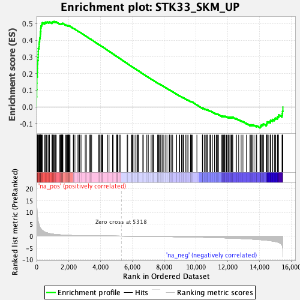
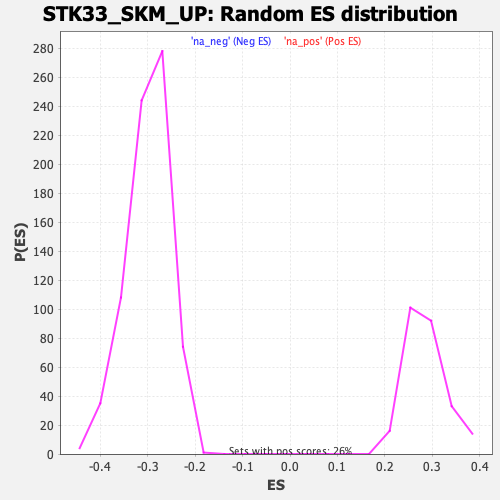

| | | Dataset | DE_genes |
| Phenotype | NoPhenotypeAvailable |
| Upregulated in class | na_pos |
| GeneSet | STK33_SKM_UP |
| Enrichment Score (ES) | 0.51246893 |
| Normalized Enrichment Score (NES) | 1.8077717 |
| Nominal p-value | 0.0 |
| FDR q-value | 0.0031835267 |
| FWER p-Value | 0.019 |
Table: GSEA Results Summary

Fig 1: Enrichment plot: STK33_SKM_UP
Profile of the Running ES Score & Positions of GeneSet Members on the Rank Ordered List
| PROBE | GENE SYMBOL | GENE_TITLE | RANK IN GENE LIST | RANK METRIC SCORE | RUNNING ES | CORE ENRICHMENT | | 1 | ST20 | | | 1 | 19.370 | 0.0593 | Yes |
| 2 | CCL4 | | | 9 | 14.658 | 0.1038 | Yes |
| 3 | OLR1 | | | 15 | 12.741 | 0.1426 | Yes |
| 4 | BCL2A1 | | | 18 | 12.506 | 0.1808 | Yes |
| 5 | LY96 | | | 47 | 8.885 | 0.2062 | Yes |
| 6 | MXD1 | | | 54 | 8.396 | 0.2316 | Yes |
| 7 | TFEC | | | 56 | 8.248 | 0.2568 | Yes |
| 8 | KCNJ2 | | | 72 | 7.401 | 0.2785 | Yes |
| 9 | TYROBP | | | 94 | 6.282 | 0.2964 | Yes |
| 10 | CD53 | | | 101 | 6.147 | 0.3149 | Yes |
| 11 | TNF | | | 104 | 6.046 | 0.3333 | Yes |
| 12 | TMEM71 | | | 108 | 5.928 | 0.3513 | Yes |
| 13 | FGR | | | 155 | 4.741 | 0.3628 | Yes |
| 14 | RNF19B | | | 159 | 4.659 | 0.3769 | Yes |
| 15 | GBP3 | | | 169 | 4.485 | 0.3900 | Yes |
| 16 | FGL2 | | | 188 | 4.141 | 0.4016 | Yes |
| 17 | P2RY14 | | | 196 | 3.898 | 0.4130 | Yes |
| 18 | BCL3 | | | 226 | 3.524 | 0.4220 | Yes |
| 19 | CYBB | | | 231 | 3.449 | 0.4323 | Yes |
| 20 | OLIG1 | | | 239 | 3.353 | 0.4421 | Yes |
| 21 | GPR65 | | | 250 | 3.289 | 0.4515 | Yes |
| 22 | IL1A | | | 261 | 3.130 | 0.4605 | Yes |
| 23 | ARL5B | | | 263 | 3.112 | 0.4699 | Yes |
| 24 | IRF9 | | | 269 | 3.053 | 0.4790 | Yes |
| 25 | TLR1 | | | 283 | 2.887 | 0.4870 | Yes |
| 26 | C5AR1 | | | 321 | 2.626 | 0.4926 | Yes |
| 27 | IL1B | | | 343 | 2.495 | 0.4989 | Yes |
| 28 | LPAR6 | | | 359 | 2.397 | 0.5052 | Yes |
| 29 | NAMPT | | | 486 | 1.817 | 0.5025 | Yes |
| 30 | MILR1 | | | 530 | 1.654 | 0.5048 | Yes |
| 31 | NCF2 | | | 548 | 1.590 | 0.5086 | Yes |
| 32 | FGD4 | | | 626 | 1.417 | 0.5078 | Yes |
| 33 | LPXN | | | 665 | 1.343 | 0.5095 | Yes |
| 34 | KMO | | | 751 | 1.192 | 0.5076 | Yes |
| 35 | GBP2 | | | 792 | 1.122 | 0.5084 | Yes |
| 36 | MPEG1 | | | 809 | 1.096 | 0.5107 | Yes |
| 37 | EMP3 | | | 965 | 0.905 | 0.5033 | Yes |
| 38 | MNS1 | | | 970 | 0.897 | 0.5058 | Yes |
| 39 | SLC12A6 | | | 987 | 0.871 | 0.5074 | Yes |
| 40 | CLDN1 | | | 989 | 0.868 | 0.5100 | Yes |
| 41 | TNFRSF11B | | | 1024 | 0.824 | 0.5103 | Yes |
| 42 | CEP19 | | | 1045 | 0.805 | 0.5114 | Yes |
| 43 | NECAP1 | | | 1090 | 0.763 | 0.5109 | Yes |
| 44 | TNFRSF21 | | | 1102 | 0.753 | 0.5125 | Yes |
| 45 | CD86 | | | 1169 | 0.700 | 0.5103 | No |
| 46 | STX12 | | | 1199 | 0.679 | 0.5105 | No |
| 47 | UBE2W | | | 1235 | 0.654 | 0.5102 | No |
| 48 | AMN1 | | | 1445 | 0.545 | 0.4981 | No |
| 49 | SNX16 | | | 1495 | 0.519 | 0.4965 | No |
| 50 | SMIM14 | | | 1511 | 0.512 | 0.4971 | No |
| 51 | RCBTB2 | | | 1538 | 0.500 | 0.4969 | No |
| 52 | MYEF2 | | | 1549 | 0.495 | 0.4978 | No |
| 53 | ARHGAP42 | | | 1572 | 0.482 | 0.4978 | No |
| 54 | STAM2 | | | 1582 | 0.478 | 0.4987 | No |
| 55 | GPR132 | | | 1588 | 0.477 | 0.4998 | No |
| 56 | HINT3 | | | 1606 | 0.470 | 0.5001 | No |
| 57 | ZNF117 | | | 1642 | 0.455 | 0.4992 | No |
| 58 | LCOR | | | 1645 | 0.454 | 0.5005 | No |
| 59 | IFI16 | | | 1648 | 0.453 | 0.5018 | No |
| 60 | TLR6 | | | 1825 | 0.381 | 0.4914 | No |
| 61 | VSIG4 | | | 1858 | 0.369 | 0.4904 | No |
| 62 | NFKBIZ | | | 1907 | 0.353 | 0.4883 | No |
| 63 | NLRC4 | | | 1939 | 0.346 | 0.4874 | No |
| 64 | SLC7A11 | | | 1965 | 0.336 | 0.4868 | No |
| 65 | DPY19L4 | | | 1979 | 0.334 | 0.4869 | No |
| 66 | BBS12 | | | 2016 | 0.320 | 0.4855 | No |
| 67 | GLIPR1 | | | 2023 | 0.319 | 0.4861 | No |
| 68 | SYNJ2BP | | | 2040 | 0.316 | 0.4860 | No |
| 69 | SYCP2 | | | 2047 | 0.313 | 0.4866 | No |
| 70 | FAM177A1 | | | 2101 | 0.298 | 0.4840 | No |
| 71 | PKIB | | | 2310 | 0.242 | 0.4711 | No |
| 72 | ACTA2 | | | 2313 | 0.242 | 0.4717 | No |
| 73 | ZNF682 | | | 2408 | 0.225 | 0.4663 | No |
| 74 | TBC1D8 | | | 2594 | 0.192 | 0.4547 | No |
| 75 | LFNG | | | 2642 | 0.183 | 0.4522 | No |
| 76 | NFKBIA | | | 2692 | 0.177 | 0.4495 | No |
| 77 | SLC38A6 | | | 2707 | 0.175 | 0.4491 | No |
| 78 | CYTH4 | | | 2792 | 0.163 | 0.4441 | No |
| 79 | ASPH | | | 3055 | 0.136 | 0.4273 | No |
| 80 | ADM | | | 3133 | 0.128 | 0.4227 | No |
| 81 | GDPD1 | | | 3324 | 0.112 | 0.4105 | No |
| 82 | MYBPH | | | 3381 | 0.108 | 0.4072 | No |
| 83 | RNF141 | | | 3387 | 0.108 | 0.4072 | No |
| 84 | NMNAT1 | | | 3458 | 0.102 | 0.4029 | No |
| 85 | TLR10 | | | 3887 | 0.077 | 0.3750 | No |
| 86 | CTSK | | | 3927 | 0.075 | 0.3727 | No |
| 87 | MAP2 | | | 3949 | 0.073 | 0.3716 | No |
| 88 | ITGB8 | | | 4041 | 0.067 | 0.3658 | No |
| 89 | RGS1 | | | 4066 | 0.066 | 0.3644 | No |
| 90 | OSBPL11 | | | 4072 | 0.066 | 0.3643 | No |
| 91 | ACSL6 | | | 4133 | 0.062 | 0.3605 | No |
| 92 | HECW2 | | | 4146 | 0.062 | 0.3599 | No |
| 93 | AMMECR1 | | | 4164 | 0.060 | 0.3590 | No |
| 94 | ADORA3 | | | 4465 | 0.044 | 0.3395 | No |
| 95 | TTC30B | | | 4551 | 0.039 | 0.3340 | No |
| 96 | ZNF718 | | | 4769 | 0.028 | 0.3198 | No |
| 97 | SNORA68 | | | 4813 | 0.025 | 0.3171 | No |
| 98 | MPPED2 | | | 5028 | 0.014 | 0.3031 | No |
| 99 | RASGRP3 | | | 5043 | 0.013 | 0.3022 | No |
| 100 | DNAJC15 | | | 5070 | 0.012 | 0.3005 | No |
| 101 | TMTC3 | | | 5079 | 0.012 | 0.3000 | No |
| 102 | IL10RA | | | 5112 | 0.010 | 0.2980 | No |
| 103 | SAMD8 | | | 5196 | 0.006 | 0.2925 | No |
| 104 | GPR137C | | | 5249 | 0.004 | 0.2891 | No |
| 105 | CREBRF | | | 5690 | -0.020 | 0.2603 | No |
| 106 | TMEM107 | | | 5722 | -0.022 | 0.2584 | No |
| 107 | ZFP36 | | | 5936 | -0.035 | 0.2445 | No |
| 108 | CPEB2 | | | 5987 | -0.038 | 0.2413 | No |
| 109 | CD58 | | | 6017 | -0.040 | 0.2395 | No |
| 110 | MFAP3 | | | 6042 | -0.042 | 0.2381 | No |
| 111 | CREB5 | | | 6114 | -0.047 | 0.2336 | No |
| 112 | TRIM23 | | | 6227 | -0.054 | 0.2264 | No |
| 113 | LMBRD2 | | | 6306 | -0.059 | 0.2214 | No |
| 114 | RNF19A | | | 6312 | -0.060 | 0.2213 | No |
| 115 | EPB41L5 | | | 6340 | -0.061 | 0.2197 | No |
| 116 | MAFB | | | 6407 | -0.066 | 0.2156 | No |
| 117 | ZNF675 | | | 6412 | -0.066 | 0.2155 | No |
| 118 | MFAP3L | | | 6671 | -0.086 | 0.1989 | No |
| 119 | GPR183 | | | 6704 | -0.088 | 0.1970 | No |
| 120 | RTN1 | | | 6905 | -0.103 | 0.1842 | No |
| 121 | SKIL | | | 7003 | -0.111 | 0.1782 | No |
| 122 | RIT1 | | | 7013 | -0.112 | 0.1779 | No |
| 123 | STOX2 | | | 7194 | -0.126 | 0.1665 | No |
| 124 | ZNF763 | | | 7258 | -0.132 | 0.1628 | No |
| 125 | LRRC37A2 | | | 7270 | -0.133 | 0.1625 | No |
| 126 | CFL2 | | | 7343 | -0.140 | 0.1582 | No |
| 127 | GPR34 | | | 7362 | -0.141 | 0.1574 | No |
| 128 | TK2 | | | 7608 | -0.162 | 0.1418 | No |
| 129 | CD101 | | | 7610 | -0.163 | 0.1423 | No |
| 130 | WDR19 | | | 7650 | -0.166 | 0.1402 | No |
| 131 | ARID5B | | | 7680 | -0.169 | 0.1388 | No |
| 132 | CDC37L1 | | | 7728 | -0.173 | 0.1363 | No |
| 133 | GPR137B | | | 7793 | -0.179 | 0.1326 | No |
| 134 | MFSD9 | | | 7817 | -0.181 | 0.1317 | No |
| 135 | FCHSD1 | | | 7821 | -0.181 | 0.1320 | No |
| 136 | PID1 | | | 7915 | -0.190 | 0.1265 | No |
| 137 | TFPI | | | 7953 | -0.194 | 0.1247 | No |
| 138 | KIAA0895 | | | 8073 | -0.206 | 0.1175 | No |
| 139 | TTLL7 | | | 8187 | -0.217 | 0.1107 | No |
| 140 | SETBP1 | | | 8333 | -0.233 | 0.1019 | No |
| 141 | MSS51 | | | 8344 | -0.234 | 0.1020 | No |
| 142 | TCTEX1D1 | | | 8376 | -0.237 | 0.1007 | No |
| 143 | NFXL1 | | | 8454 | -0.246 | 0.0964 | No |
| 144 | TNFAIP2 | | | 8546 | -0.256 | 0.0912 | No |
| 145 | PTPRO | | | 8788 | -0.285 | 0.0762 | No |
| 146 | FCAMR | | | 8801 | -0.286 | 0.0763 | No |
| 147 | APPL2 | | | 8966 | -0.305 | 0.0665 | No |
| 148 | STX6 | | | 8988 | -0.308 | 0.0661 | No |
| 149 | CDKN1A | | | 9101 | -0.323 | 0.0597 | No |
| 150 | SIPA1L2 | | | 9140 | -0.328 | 0.0582 | No |
| 151 | ASB2 | | | 9206 | -0.336 | 0.0550 | No |
| 152 | DUSP5 | | | 9248 | -0.341 | 0.0533 | No |
| 153 | SH2B3 | | | 9356 | -0.353 | 0.0474 | No |
| 154 | RHOB | | | 9441 | -0.365 | 0.0430 | No |
| 155 | KIAA1841 | | | 9459 | -0.366 | 0.0430 | No |
| 156 | IRF1 | | | 9517 | -0.375 | 0.0404 | No |
| 157 | CDKN1C | | | 9666 | -0.398 | 0.0319 | No |
| 158 | ADAM28 | | | 9676 | -0.400 | 0.0326 | No |
| 159 | BMF | | | 9698 | -0.404 | 0.0324 | No |
| 160 | MIR21 | | | 9739 | -0.409 | 0.0310 | No |
| 161 | ZNF432 | | | 9790 | -0.416 | 0.0290 | No |
| 162 | PHLDA1 | | | 10069 | -0.456 | 0.0122 | No |
| 163 | PRTFDC1 | | | 10414 | -0.508 | -0.0088 | No |
| 164 | MIDN | | | 10427 | -0.509 | -0.0081 | No |
| 165 | ARRDC3 | | | 10429 | -0.509 | -0.0066 | No |
| 166 | NINJ2 | | | 10545 | -0.527 | -0.0125 | No |
| 167 | KITLG | | | 10591 | -0.537 | -0.0138 | No |
| 168 | PPCS | | | 10679 | -0.550 | -0.0178 | No |
| 169 | TP53INP1 | | | 10708 | -0.554 | -0.0180 | No |
| 170 | FABP4 | | | 10723 | -0.556 | -0.0172 | No |
| 171 | TWF1 | | | 10836 | -0.572 | -0.0228 | No |
| 172 | CMTM3 | | | 10904 | -0.582 | -0.0254 | No |
| 173 | TGFB1I1 | | | 10939 | -0.588 | -0.0258 | No |
| 174 | FNBP1L | | | 11053 | -0.606 | -0.0314 | No |
| 175 | PLAU | | | 11174 | -0.631 | -0.0373 | No |
| 176 | CPEB4 | | | 11281 | -0.653 | -0.0423 | No |
| 177 | KLHL28 | | | 11325 | -0.661 | -0.0431 | No |
| 178 | ZBTB6 | | | 11355 | -0.668 | -0.0429 | No |
| 179 | MORN2 | | | 11438 | -0.685 | -0.0462 | No |
| 180 | SERAC1 | | | 11616 | -0.724 | -0.0556 | No |
| 181 | SQSTM1 | | | 11671 | -0.736 | -0.0569 | No |
| 182 | HBEGF | | | 11688 | -0.740 | -0.0557 | No |
| 183 | ANXA1 | | | 11745 | -0.750 | -0.0571 | No |
| 184 | CD36 | | | 11790 | -0.761 | -0.0576 | No |
| 185 | LGALS1 | | | 11820 | -0.766 | -0.0572 | No |
| 186 | RGS2 | | | 11833 | -0.769 | -0.0556 | No |
| 187 | BTBD7 | | | 11929 | -0.791 | -0.0594 | No |
| 188 | UNKL | | | 12015 | -0.808 | -0.0625 | No |
| 189 | UNK | | | 12053 | -0.815 | -0.0624 | No |
| 190 | KLF6 | | | 12090 | -0.825 | -0.0623 | No |
| 191 | TP53INP2 | | | 12146 | -0.842 | -0.0633 | No |
| 192 | CRK | | | 12164 | -0.845 | -0.0618 | No |
| 193 | NBEAL1 | | | 12227 | -0.860 | -0.0633 | No |
| 194 | NAPSB | | | 12273 | -0.870 | -0.0636 | No |
| 195 | PLXNB2 | | | 12290 | -0.875 | -0.0619 | No |
| 196 | THAP1 | | | 12324 | -0.883 | -0.0614 | No |
| 197 | PTPRM | | | 12530 | -0.936 | -0.0720 | No |
| 198 | PALLD | | | 12552 | -0.942 | -0.0705 | No |
| 199 | SULF2 | | | 12694 | -0.980 | -0.0767 | No |
| 200 | TRIB1 | | | 12849 | -1.028 | -0.0837 | No |
| 201 | ERMAP | | | 12962 | -1.065 | -0.0877 | No |
| 202 | TMOD2 | | | 13175 | -1.127 | -0.0982 | No |
| 203 | DUSP8 | | | 13399 | -1.214 | -0.1091 | No |
| 204 | FCHO2 | | | 13447 | -1.231 | -0.1084 | No |
| 205 | MIR22HG | | | 13514 | -1.258 | -0.1089 | No |
| 206 | ZNF407 | | | 13566 | -1.280 | -0.1083 | No |
| 207 | DYNC2LI1 | | | 13655 | -1.313 | -0.1101 | No |
| 208 | IL15 | | | 13797 | -1.380 | -0.1151 | No |
| 209 | SOWAHC | | | 13824 | -1.389 | -0.1125 | No |
| 210 | JUNB | | | 14030 | -1.485 | -0.1215 | No |
| 211 | CD9 | | | 14063 | -1.510 | -0.1189 | No |
| 212 | TRIP11 | | | 14079 | -1.521 | -0.1152 | No |
| 213 | FAM131A | | | 14089 | -1.529 | -0.1111 | No |
| 214 | ZCCHC14 | | | 14138 | -1.557 | -0.1095 | No |
| 215 | AFF4 | | | 14205 | -1.604 | -0.1089 | No |
| 216 | ETV1 | | | 14214 | -1.607 | -0.1045 | No |
| 217 | EVI5 | | | 14255 | -1.633 | -0.1021 | No |
| 218 | GNG11 | | | 14435 | -1.741 | -0.1086 | No |
| 219 | RND3 | | | 14439 | -1.744 | -0.1034 | No |
| 220 | BTG2 | | | 14468 | -1.766 | -0.0998 | No |
| 221 | RGCC | | | 14479 | -1.771 | -0.0951 | No |
| 222 | THBD | | | 14484 | -1.776 | -0.0899 | No |
| 223 | FAM20C | | | 14585 | -1.856 | -0.0907 | No |
| 224 | RHOC | | | 14677 | -1.947 | -0.0907 | No |
| 225 | PLK2 | | | 14691 | -1.962 | -0.0856 | No |
| 226 | CYBRD1 | | | 14695 | -1.965 | -0.0798 | No |
| 227 | SGK1 | | | 14823 | -2.084 | -0.0817 | No |
| 228 | CALHM2 | | | 14826 | -2.089 | -0.0754 | No |
| 229 | DAAM1 | | | 14933 | -2.205 | -0.0756 | No |
| 230 | DUSP1 | | | 14967 | -2.266 | -0.0708 | No |
| 231 | DNAJB4 | | | 15018 | -2.330 | -0.0670 | No |
| 232 | TFPI2 | | | 15124 | -2.502 | -0.0662 | No |
| 233 | HMOX1 | | | 15137 | -2.517 | -0.0593 | No |
| 234 | PRKY | | | 15207 | -2.673 | -0.0556 | No |
| 235 | ATRX | | | 15208 | -2.676 | -0.0474 | No |
| 236 | UPP1 | | | 15417 | -3.741 | -0.0496 | No |
| 237 | EGR1 | | | 15434 | -4.010 | -0.0383 | No |
| 238 | ERRFI1 | | | 15449 | -4.472 | -0.0255 | No |
| 239 | FOS | | | 15471 | -8.771 | -0.0000 | No |
Table: GSEA details [plain text format]

Fig 2: STK33_SKM_UP: Random ES distribution
Gene set null distribution of ES for STK33_SKM_UP